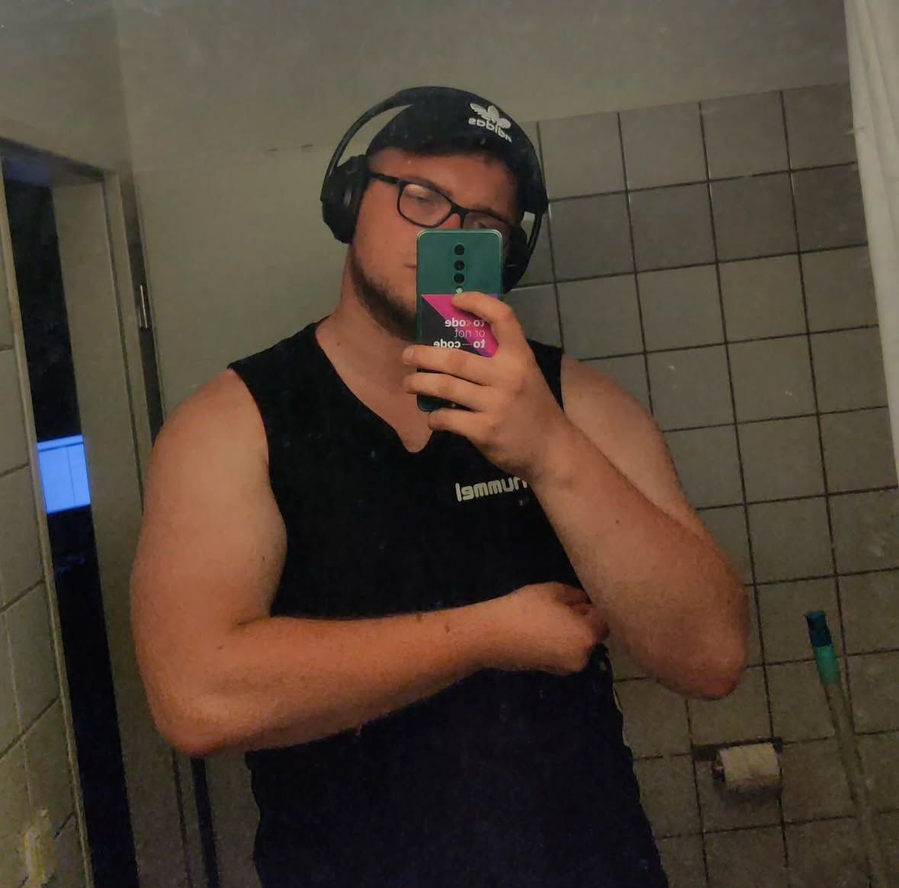

RB Leipzig (RB steht nicht für Regionalbahn, sonst müsste es "nach" heißen. (RB nach Leipzig))

Vereinsinformationen
- Trainer: Marco Rose
-
Trainerfoto:

- Stadt: Leipzig
- Stadion: Red Bull Arena
- Kapazität: 41.122 Zuschauer
- Offizielle Website: rbleipzig.com
Fun-Facts
- Leipzig ist nicht in Bayern
- Kaffee ist im Stadon offiziell nicht erlaubt, da Red Bull der einzig zulässige Wachmacher ist. Angeblich soll sogar ein Ordner mal einen Fan, der eine Thermoskanne in der Hand hatte, verfolgt haben.
- Durch das Sponsoring von Red Bull gibt es immer wieder Verwechslungen: manche Fans fragen sich, wann endlich Max Verstappen im Stadion eine Ehrendrunde dreht.
🔙 Zurück zur Tabelle